Fase 1. Preparación del almacenamiento
Paso 1. Añadir disco virtual
Se añade un disco virtual de 20 GB tipo NVMe en VMware para trabajar almacenamiento de forma aislada respecto al sistema principal.


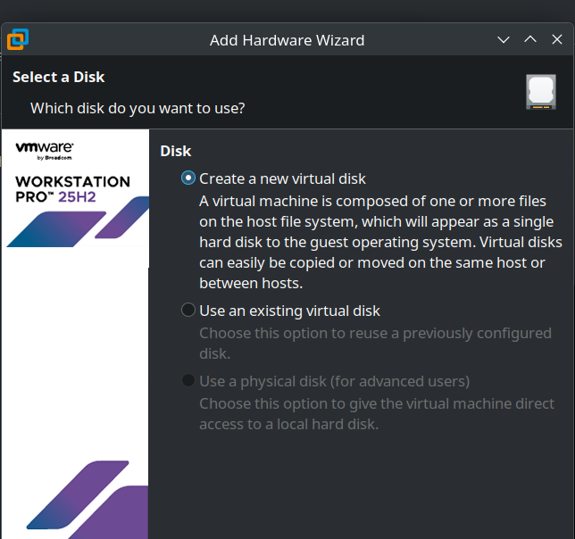

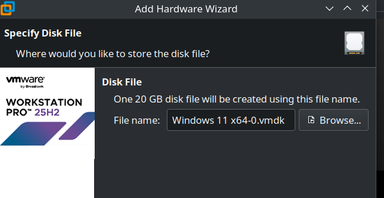
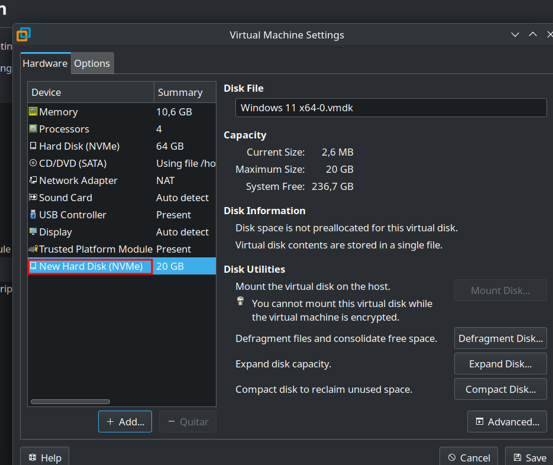
Paso 2. Inicialización del disco
Se inicializa el disco en formato GPT, adecuado para sistemas actuales y compatible con Windows 11.
Paso 3. Creación de particiones
Se crean dos particiones: Dades (NTFS, 15 GB) para almacenamiento controlado y Portable (FAT32, 5 GB) para compatibilidad externa.

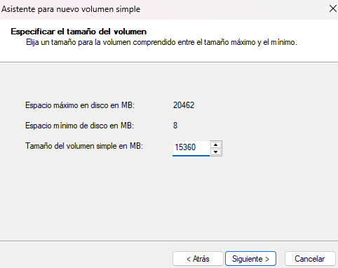
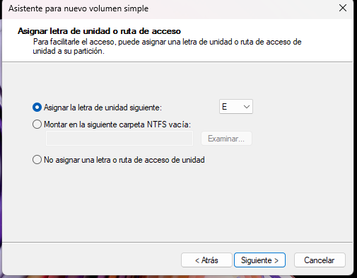
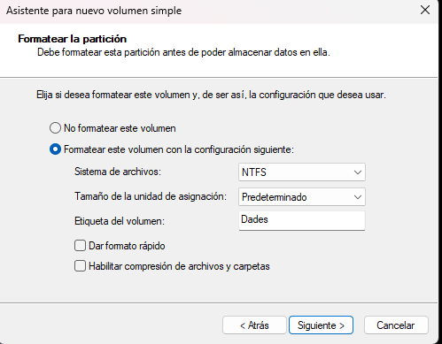

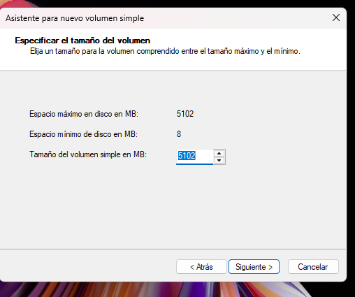
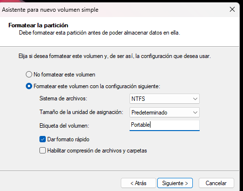

Paso 4. Verificación con diskpart
Se verifica la configuración mediante diskpart, comprobando discos y volúmenes.

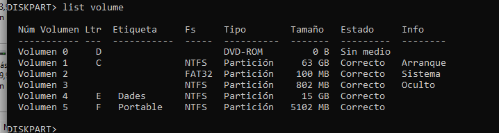
Fase 2. Usuarios, grupos y cuotas
Paso 5. Configuración de cuotas
Se habilitan cuotas en la unidad Dades (NTFS), estableciendo límite de 300 MB por usuario con advertencia.


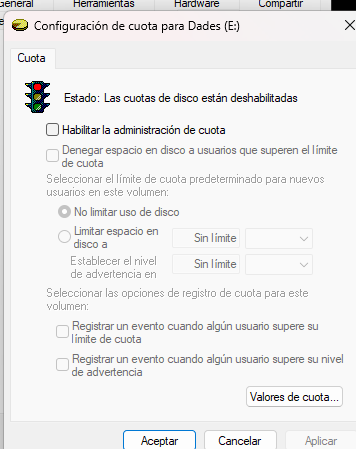
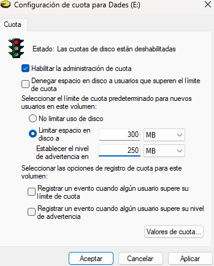
Paso 6. Creación de usuarios y grupo
Se crean los usuarios alumne1 y alumne2 y se agrupan en Limitados para control conjunto de permisos.
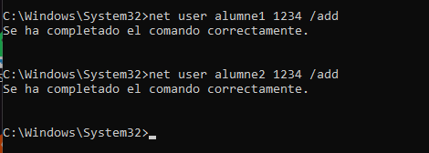

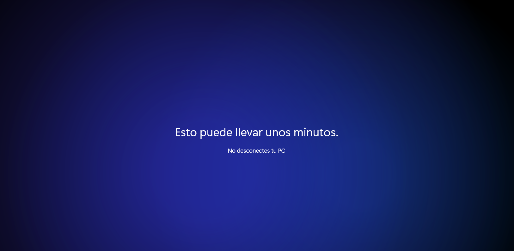
Paso 7. Prueba de cuotas
Se prueba con alumne1, superando el límite y comprobando el bloqueo de escritura.
Fase 3. Copias de seguridad
Se añade un tercer disco, se formatea en NTFS como unidad de backup y se crea la carpeta CopiasUsuaris para almacenar perfiles.
Script y automatización
Se crea un script .bat que copia C:\Users\%USERNAME% a E:\CopiasUsuaris y se configura mediante gpedit para ejecutarse al inicio de sesión.
Fase 4. Verificación de copias
Se inicia sesión con alumne1 y se comprueba que la copia del perfil se genera correctamente en CopiasUsuaris.
Fase 5. Gestión de procesos
Se listan procesos con tasklist, se guarda la salida y se identifican procesos prescindibles para optimizar el sistema.
Se eliminan procesos como OneDrive o Teams mediante taskkill y se verifica que no se ejecutan en nuevas sesiones.
Fase 6. Permisos avanzados y ACLs
Se crea la carpeta E:\Projectes, se eliminan permisos heredados, se asigna control total al grupo Limitados y se limita alumne2 a solo lectura. Se verifica comportamiento con ambos usuarios.
Se demuestra el uso de ACLs para aplicar control granular, donde las reglas específicas de usuario prevalecen sobre las de grupo.